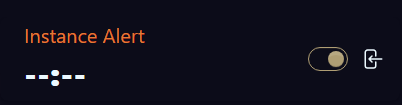
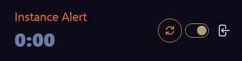
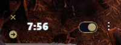
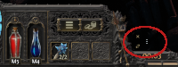

The "Instance Alert" feature helps you track instance timers with audio-visual notifications, ensuring you don't lose progress by staying
too long in town.
The alert system provides both visual and audio cues as you approach the instance timeout.

Instance Alert (Desktop)
The Instance Alert feature can be opened on the desktop or as an overlay in-game.

Instance Alert (Expired)
The Instance Alert will flash when the timer has expired and the instance is at risk of being lost.
How Instance Alert Works
The timer starts automatically when entering town.
Default timer duration is 8 minutes (per Game Tip, instances last 8-15 minutes in Path of Exile 2)
Countdown begins at 30 seconds remaining
The timer is reset when zoning back into the instance (e.g. taking town portal back out)
Visual and Audio Alerts:
A countdown sound plays during the final 30 seconds
This can be silenced using the mute button if needed, but the timer will keep running
An alarm triggers when time runs out
The timer display flashes after, indicating the instance is at risk of expiring
The timer can be reset at this point, and the countdown will restart next time you enter town
Control Options:
Mute countdown sound
Stop alarm
Overlay Mode:
Compact, draggable overlay for in-game visibility
Automatically expands & collapses, but can be manually locked to stay open
Toggle between automatic and manual modes

Overlay (Expanded)
The Instance Alert overlay can be locked to show the timer and controls at all times.

Overlay (Automatic)
The Instance Alert overlay will automatically expand and collapse when entering and leaving town.
Monitoring Toggle
Use the monitoring toggle to enable/disable town tracking
Overlay Toggle
Enable overlay in Settings, along with the other Meter Overlays